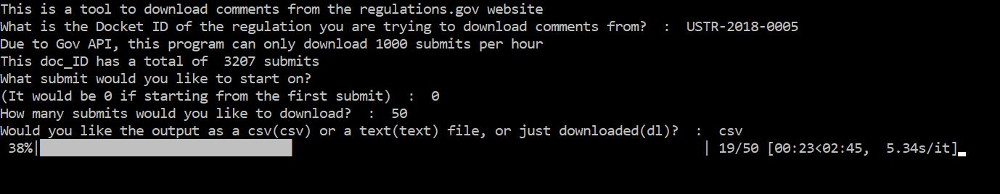
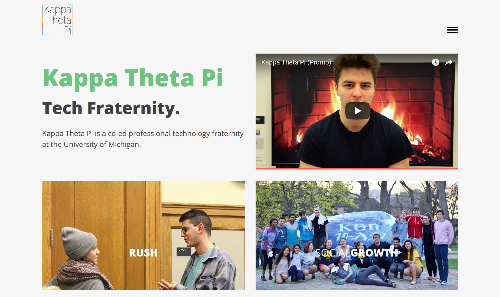
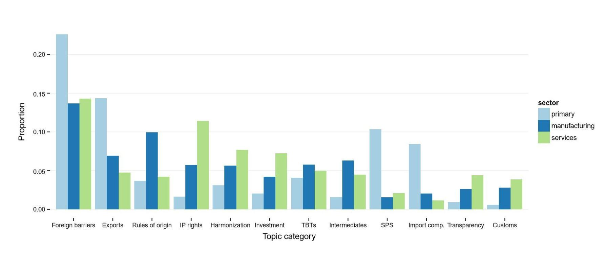

Education
Ann Arbor, MI
B.S.E. in Computer Science
--Regents Merit Scholarship (Michigan Resident with High
Academic Achievement)
--Completed Coursework--
Data Structures and Algorithms, Web Databases and Information Systems,
Computer Organization, Discrete Mathematics, Linear Algebra,
Entreprenuerial Business Basics
--Current Coursework--
Machine Learning, Computer Security, Marketing Mgt
Sep '16 - May '20
Work Experience
Ann Arbor, MI
Intern
--Ensured swift resolution of all delivery system bugs and errors
--Developed and built online inventory system to expedite
expense tracking as well as tracking servers currently in use in the field,
built using a combination of AngularJS, C#, SQL and HTML5/CSS
Summer '18
Ann Arbor, Mi
Research Analyst for Dr. Iain Osgood
--Evaluate the broader key public policy issues regarding preferential
trade agreements that garner the most concern from industrial America
--Create python algorithms to quickly gather and present data in a logical format
--Analyze the coded data using R statistical software to evaluate results
Sep '16 - Present
Leadership Roles
Ann Arbor, MI
Director of Marketing
--Developed concrete branding plan of action that ensures the
community has a singular image of Kappa Theta Pi
--Created
an Alumni network allowing actives to capitalize on connections
within industry
--Participate in weekly meetings and discuss the
development of technology in the local community, the local
industry, and the greater world
Sep '17 - Present
Ann Arbor, MI
Account Director
--Managed team of five students as well as relationship with
individual client
--Conducted sales data breakdown for local
startup Wedit, identifying new avenues to increase revenue
and decrease costs
--Generated insights on the average customer
profile for Wedit by using Google Analytics, this resulted in
a pivot of the targeted marketing sectors
--Implemented and
tracked the effects of recommended marketing strategy for
local gelateria, Iorios, which increased in store foot traffic
by 7%
Sep '16 - Jan '18'
Languages
C++
Python
ReactJS | AngularJS
HTML5/CSS
Projects
Python
Regulations.gov Web-Scraper | github
--Created an application that allows users to easily download and
analyze comments on all legislature submitted to regulations.gov
--Users can download all data as a CSV file, a TXT file for text-classification
purposes, or simply download all files relating to the legislature for custom use

ReactJS | HTML5/CSS
KappaThetaPi.com | live website | github
--Oversaw front-end development and design.
--Continue to monitor google analytics to track
traffic and use the data to improve the website

R Statistical Software
Corporate Support for PTA's study | report
--Developed and analyzed database of frequently discussed topics in
submissions to the United Statess Trade Representative
--Found that sales, sourcing, and regulation are all significant drivers
of industrial preference on trade
--Firms and industries, even within the same sector, are very heterogenous
in their areas of main interest concerning PTA's

Contact
edknight@umich.edu
LinkedIn
Github